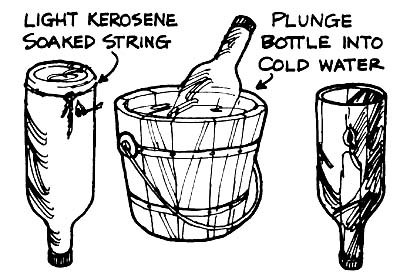

Back in the mid-1800's-when the city of Tacoma, Washington was being settled-the only light that shined on the roads at night was the glow emanating from uncurtained house windows. Which meant that the loggers and miners whose shacks were on the outskirts of town had to find a simple and inexpensive way to illuminate the paths to their homes after dark. And-as you may or may not know-the 64 simple and inexpensive" device these pioneers used was called a dingus.
To make a dingus, all a settler had to do was [1] find a whiskey bottle, [2] make sure-in one way or another-that the bottle was empty, [3] wrap a kerosene-soaked string around the base of the container, [4] set the cord afire, [5] immediately plunge the vessel into cold water (causing its bottom to break off), and [6] insert a candle into the neck of the whiskey bottle. The neck, of course, became the handle of the finished dingus.
I'd no sooner made my own "replica dingus" (I cheated and used a glass cutter) than I started thinking: maybe-if I could find a suitable holder in which to set the bottle-my dingus could be made to serve a dual purpose. (Obviously, you can't just set a dingus down on the ground or it'll roll away, smoke up the glass, and/or catch something on fire.)
Thus, I cast about for a suitable stand or base ... and soon found that a plastic distilled-water jug, with the neck cut off, worked perfectly! All I had to do was set the dingus down in the container, and-presto!-I had a makeshift hurricane lamp. (To keep the lamp from tipping over easily, I partly filled the gallon jug with sand.)
A large jar also serves as a satisfactory dingus holder ... and a stable one, too, if it's filled with water.
Here are a few dingus-making suggestions: Brown and green bottles don't pass much light, and therefore aren't recommended. Colorless containers, on the other hand, reflect light in all directions ... including your eyes. Hence, if you use a plain glass bottle you might want to paint it black on one side, as I've done mine. (Silver paint or aluminum foil would accomplish the same thing and-in addition-convert the back of the dingus into a dandy reflector.)
When you've finished making your dingus, paint decorative designs on it (and on its base) and you'll have an attractive and useful-if unusual-"homestead flashlight".
|
 |
|
|